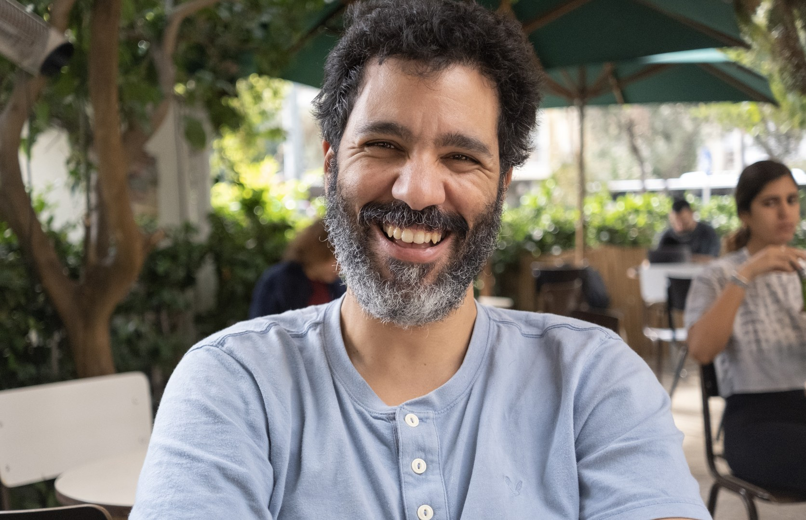

אלון לוי · יוצר תיעודי

אני עושה סרטים תיעודיים, ברובם לאט. רוב הסרטים אורכים שלוש עד חמש שנים מהביקור הראשון ועד הקאט הראשון. אני נמשך למקומות שמחכים למשהו — לכביש, לחזרה, לעונה שלא מגיעה בזמן — ולאנשים שמחכים שם. הסרטים שלי מנסים לתת לציפייה הזאת את המשך המלא שלה במקום לדחוס אותה לסיפור. נולדתי בבאר שבע ב־1986 וגדלתי בין הנגב לתל אביב. למדתי קולנוע בסם שפיגל בין 2011 ל־2015, ומאז ביימתי שלושה סרטים תיעודיים באורך מלא וכמה סרטים קצרים. עבודותיי הוקרנו ב־IDFA, Visions du Réel, לוקרנו, שפילד דוקפסט ודוקאביב, ומופצות על ידי פיתה פילמס. אני מצלם את רוב הסרטים שלי בעצמי ועורך חלק מהם. אני עובד בעברית, ערבית ואנגלית, וחי בדרום תל אביב. כשאני לא מצלם אני מלמד במחלקה התיעודית בספיר ומנהל סדנה קטנה על אתיקה תצפיתית.